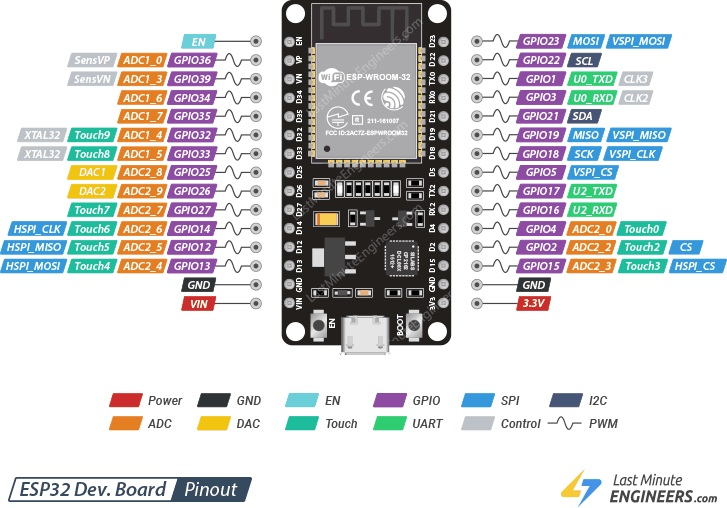
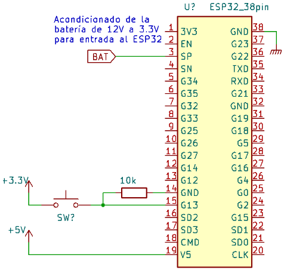
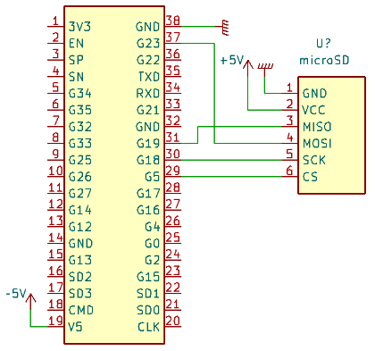
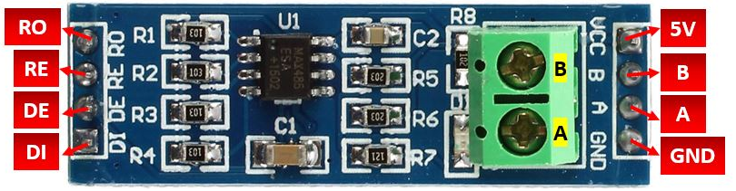
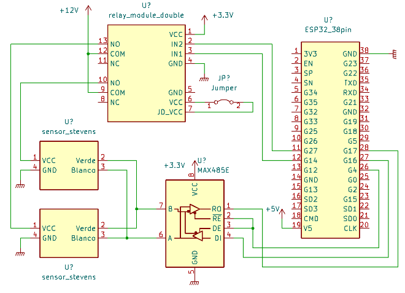
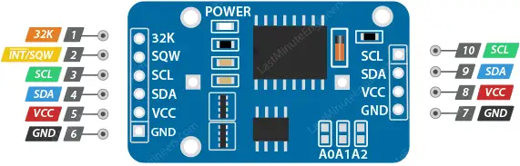
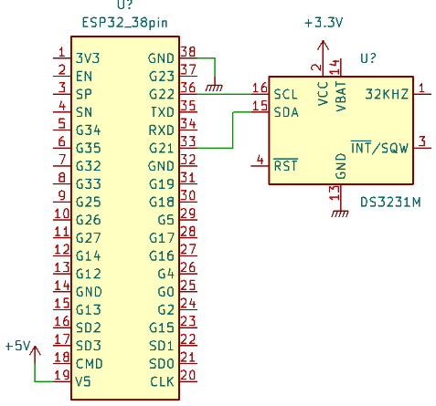

2.- Componentes del equipo
2.1.- ESP32
El micro elegido es el ESP32 DOIT DEVKIT V1. El pinout de la versión de 30 pines es el siguiente:
El ESP32 es un microcontrolador de 32 bits que pertenece a la familia de dispositivos WiFi y Bluetooth de baja potencia. Este dispositivo fue desarrollado por Espressif Systems y se caracteriza por su capacidad de conectividad inalámbrica de alta velocidad y una amplia gama de periféricos.
El ESP32 integra un procesador de doble núcleo con una velocidad de reloj que oscila entre los 80 y 240 MHz, lo que lo hace muy potente en comparación con otros dispositivos similares. Además, cuenta con una memoria flash de hasta 4 MB y una memoria RAM de 520 kB, lo que le permite manejar múltiples tareas de manera efectiva.
Otra característica importante del ESP32 es su conectividad integrada de WiFi y Bluetooth. Esto permite que el dispositivo se conecte a una red inalámbrica y se comunique con otros dispositivos habilitados para Bluetooth, lo que lo hace ideal para proyectos de IoT (Internet de las cosas). También cuenta con una gran variedad de periféricos, como puertos ADC, DAC, I2C, SPI, UART, PWM y GPIO, que pueden ser utilizados para conectar sensores, motores y otros dispositivos.
Se lo prefiere porque ya tiene integrado el módulo wifi para crear la red y porque no presenta problemas a la hora de programarlo como el STM32F103, que es el micro usado en el proyecto para Ledesma.
2.1.1.- Interrupción
La conexión con el pulsador para que se produzca la interrupción externa es la siguiente:
El nombre de la red WiFi que se genera tiene la siguiente forma:
MHTS-BIOT-<mac>
En donde <mac> corresponde a los últimos 4 caracteres de
la dirección mac del ESP32. La seguridad de esta red es WPA2 y
su contraseña es:
Password: bristebiot
Warning
Para que se conecte e interactúe bien con la red WiFi, el celular debe tener los datos móviles desactivados.
2.1.2.- Almacenamiento no volátil (simil EEPROM)
El almacenamiento no volátil (NVS, Non-Volatile Storage) es un subsistema que permite el almacenamiento persistente de datos en la memoria flash del microcontrolador. Proporciona una interfaz sencilla para guardar y recuperar información de forma no volátil, lo que significa que los datos se mantienen incluso después de reiniciar o apagar el dispositivo.
El NVS organiza los datos en pares clave-valor, donde cada valor se asocia con una clave única. Permite operaciones básicas como leer, escribir y borrar valores asociados con una clave específica. Los datos se almacenan de forma eficiente en la memoria flash y se pueden acceder rápidamente cuando sea necesario.
Al principio, se usó la librería EEPROM.h para manejar la
memoria flash como eeprom, pero luego se optó por Preferences.h
por considerarse una opción mejor.
Preferences.h: proporciona una interfaz de alto nivel para almacenar y recuperar datos de forma persistente en la memoria flash del ESP32. Utiliza una implementación de almacenamiento basada en NVS (Non-Volatile Storage) que simplifica el manejo de datos y permite acceder a ellos utilizando claves.EEPROM.h: proporciona una interfaz de bajo nivel para acceder a la memoria EEPROM emulada en la memoria flash. Permite leer y escribir datos en posiciones de memoria específicas de la EEPROM.
Con la librería Preferences.h no se especifica el tamaño
del espacio que se necesita ni tampoco en dónde específicamente
se va a guardar un valor. La librería sola se encarga de ubicar
los datos como mejor le parezca y los va rotando para que una
de memoria no se desgaste en detrimento de otra que no se usa;
algo que sí pasa con EEPROM.h, es por eso que se decidió
dejar de usarla.
Warning
Si se intenta leer un dato que un para llave-dato sin haberlo guardado primero va a haber un error de acceso a la memoria. Por eso se debe “formatear” el NVS en un ESP32 nuevo o cuando se modifique la organización.
Warning
La librería Preferences.h no pregunta si el dato a
guardar es igual al ya guardado, directamente lo sobreescribe
sin importarle si es igual al ya guardado o no. Por eso se
debe preguntar cada vez que se escriba.
La estructura que se va a guardar en el NVS es:
struct estructura {
String location_name;
String soil_type;
float latitude;
float longitude;
String type[4];
float tag_depth[4];
String mac;
bool pending_config;
String firmware_version;
float voltage_coefficient;
uint32_t unix_time;
uint32_t wakeup_number;
bool ledesma;
bool manual_measure;
bool offline;
};
La palabra clave erase borra estos elementos excepto
mac;
firmware_version;
voltage_coefficient;
unix_time.
2.1.3.- RTC interno
Se usa el RTC interno para manejar la hora y fecha. Este RTC pierde la información cada vez que se pone a dormir el ESP32, es por eso que cada vez que se despierta, se debe sincronizar con un RTC externo, que es el DS3231 en este caso.
Apenas se despierta, se inicializa el DS3231 varias veces y alimentando y quitando la alimentación en cada intento. Si después de todo eso el DS3231 no se logra inicializar, el RTC interno se sincroniza con otro valor estimado.
Este valor estimado es el valor unix_time guardado en la
eeprom sumado al tiempo de intervalo configurado. El tiempo
unix_time es el tiempo de la última vez que el equipo se
despertó.
2.2.- Módulo SD
El módulo micro SD usado es el que se consigue comúnmente; es
el que tiene el zócalo para colocar el microSD directamente,
no el que tiene el zócalo para el adaptador. Funciona con 5V o
con 3,3V, pero las pruebas con este último voltaje no han
funcionado en todos los casos, así que se elige 5V. Las
librerías que se usan son FS.h y SD.h, que vienen
instaladas con el paquete de ESP32.
La conexión entre el ESP y el módulo es:
El json de medición json_measure que se guarda en la SD es:
{
"id": "L-1234",
"timestamp": "2022-12-23-21-58-08",
"level_bat": 10.2,
"sn": 1,
"number_sent": 2,
"value": "value"
}
"value": ["010325657455548"]
"value": ["010325657455548", "010325657455548"]
"value": ["010325657455548"]
"value": [
"062+0.535,+0.060,+29.2,+84.6,+0.064,+42.952,+23.095,+44.388,+21.661",
"062+28.9,+84.0,+0.517"
]
La forma en que se guarda en la SD es:
{json_measure_0}\r\n
{json_measure_1}\r\n
{json_measure_2}\r\n
...
Donde \r y \n son retorno de carro y salto de línea,
respectivamente.
2.3.- Módulo 485
El módulo RS-485 se alimenta con 5V, pero se le cambió el integrado por uno similar que funciona con 3,3V, pues es el voltaje de funcionamiento con el que funcionan los pines del ESP32. El sensor se alimenta con 12V. Todas las masas deben estar hermanadas. El módulo 485 usado es el siguiente:
Hay que cambiarle el integrado para que funcione con 3.3V en lugar de 5V, porque ese es el voltaje de operación del ESP32.
Los sensores soportados son:
Sensor chino de temperatura, humedad y electroconductividad, THE.
Sensor chino de notrógeno, fósforo y potasio, NPK.
Sensor chino de nivel.
Sensor Stevens de parámetros varios.
El comportamiento de dichos sensores se describe en la sección 4.- Tipos de sensores soportados.
2.4.- RTC externo
El DS3231 es un circuito integrado (CI) de reloj en tiempo real (RTC, por sus siglas en inglés) de alta precisión.
Características principales:
Precisión de tiempo: tiene una precisión de tiempo muy alta, con una deriva mínima y baja fluctuación de temperatura. Puede mantener la precisión del tiempo en el rango de segundos o incluso fracciones de segundo por día.
Calendario completo: además de proporcionar la hora del día, el DS3231 también puede manejar información de fecha y calendario completo, incluyendo el día, mes y año. También puede manejar años bisiestos automáticamente.
Interfaz de comunicación: utiliza una interfaz de comunicación I2C para la configuración y lectura de datos. Esto facilita su integración con una amplia gama de microcontroladores y otros dispositivos electrónicos.
En resumen, el DS3231 es un RTC altamente preciso y confiable con características adicionales como calendario completo, alarmas y control de temperatura. Es ampliamente utilizado en aplicaciones donde se requiere una medición y seguimiento precisos del tiempo, como sistemas de registro de datos, relojes, calendarios, dispositivos de automatización del hogar y muchos otros.
La conexión con el ESP32 es:
